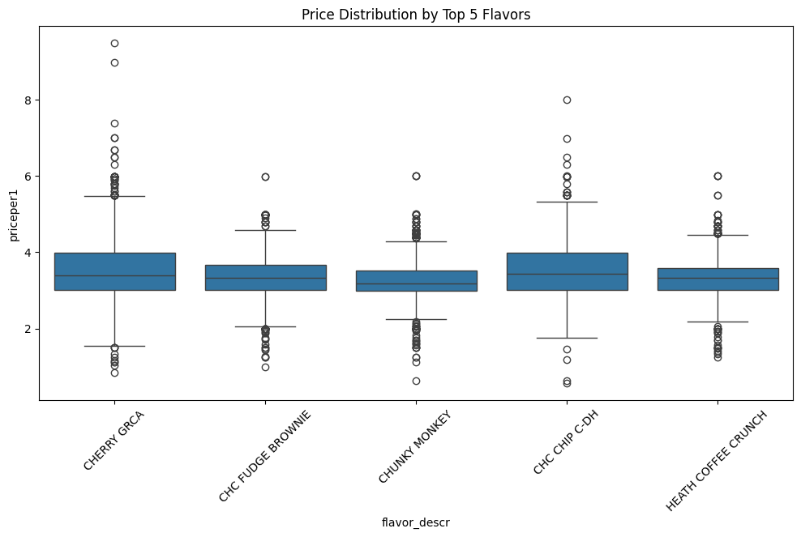
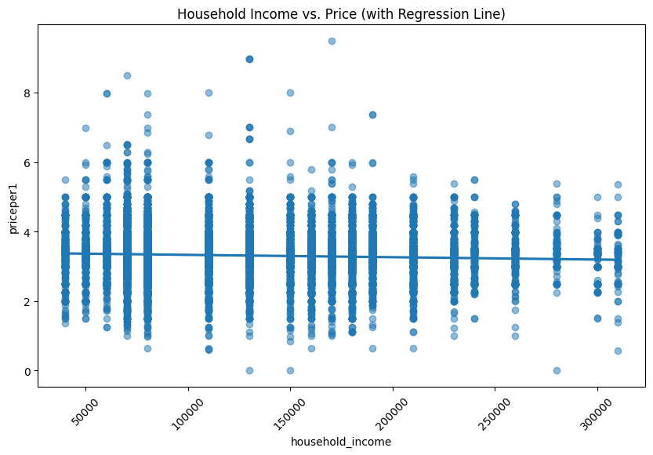

Scooping Into Ben & Jerry’s: An Analysis of Ice Cream Data
Introduction
Hello fellow ice cream enthusiasts! Today, we’re diving into a dataset of Ben & Jerry’s ice cream purchases to explore pricing, flavors, and consumer demographics. We’ll use Python and some data analysis techniques to uncover interesting insights.
Loading The Data
import pandas as pdimport numpy as npimport seaborn as snsimport matplotlib.pyplot as pltfrom sklearn.linear_model import LinearRegressionfrom sklearn.model_selection import train_test_splitfrom sklearn.metrics import mean_squared_error, r2_scoreice_cream = pd.read_csv('https://bcdanl.github.io/data/ben-and-jerry-cleaned.csv')print(ice_cream.head())
priceper1 flavor_descr size1_descr household_id household_income \
0 3.41 CAKE BATTER 16.0 MLOZ 2001456 130000
1 3.50 VAN CARAMEL FUDGE 16.0 MLOZ 2001456 130000
2 3.50 VAN CARAMEL FUDGE 16.0 MLOZ 2001456 130000
3 3.00 W-N-C-P-C 16.0 MLOZ 2001637 70000
4 3.99 AMERICONE DREAM 16.0 MLOZ 2002791 130000
household_size usecoup couponper1 region married race \
0 2 True 0.5 Central False white
1 2 False 0.0 Central False white
2 2 False 0.0 Central False white
3 1 False 0.0 West False white
4 3 False 0.0 South True white
hispanic_origin microwave dishwasher sfh internet tvcable
0 False True False False True True
1 False True False False True True
2 False True False False True True
3 False True True True False True
4 False True True True True True
<class 'pandas.core.frame.DataFrame'>
RangeIndex: 21974 entries, 0 to 21973
Data columns (total 17 columns):
# Column Non-Null Count Dtype
--- ------ -------------- -----
0 priceper1 21974 non-null float64
1 flavor_descr 21974 non-null object
2 size1_descr 21974 non-null object
3 household_id 21974 non-null int64
4 household_income 21974 non-null int64
5 household_size 21974 non-null int64
6 usecoup 21974 non-null bool
7 couponper1 21974 non-null float64
8 region 21974 non-null object
9 married 21974 non-null bool
10 race 21974 non-null object
11 hispanic_origin 21974 non-null bool
12 microwave 21974 non-null bool
13 dishwasher 21974 non-null bool
14 sfh 21974 non-null bool
15 internet 21974 non-null bool
16 tvcable 21940 non-null object
dtypes: bool(7), float64(2), int64(3), object(5)
memory usage: 1.8+ MB
None
priceper1 flavor_descr size1_descr household_id household_income \
count 21974.000000 21974 21974 2.197400e+04 21974.000000
unique NaN 50 2 NaN NaN
top NaN CHERRY GRCA 16.0 MLOZ NaN NaN
freq NaN 2097 21605 NaN NaN
mean 3.314627 NaN NaN 1.661201e+07 125290.798216
std 0.665626 NaN NaN 1.168595e+07 57188.363223
min 0.000000 NaN NaN 2.000358e+06 40000.000000
25% 3.000000 NaN NaN 8.142253e+06 80000.000000
50% 3.340000 NaN NaN 8.401573e+06 110000.000000
75% 3.590000 NaN NaN 3.018389e+07 170000.000000
max 9.480000 NaN NaN 3.044069e+07 310000.000000
household_size usecoup couponper1 region married race \
count 21974.000000 21974 21974.000000 21974 21974 21974
unique NaN 2 NaN 4 2 4
top NaN False NaN South True white
freq NaN 19629 NaN 6713 13276 18968
mean 2.456403 NaN 0.125579 NaN NaN NaN
std 1.336821 NaN 0.517889 NaN NaN NaN
min 1.000000 NaN 0.000000 NaN NaN NaN
25% 2.000000 NaN 0.000000 NaN NaN NaN
50% 2.000000 NaN 0.000000 NaN NaN NaN
75% 3.000000 NaN 0.000000 NaN NaN NaN
max 9.000000 NaN 8.980000 NaN NaN NaN
hispanic_origin microwave dishwasher sfh internet tvcable
count 21974 21974 21974 21974 21974 21940
unique 2 2 2 2 2 2
top False True True True True True
freq 20919 21567 16983 16076 18529 13954
mean NaN NaN NaN NaN NaN NaN
std NaN NaN NaN NaN NaN NaN
min NaN NaN NaN NaN NaN NaN
25% NaN NaN NaN NaN NaN NaN
50% NaN NaN NaN NaN NaN NaN
75% NaN NaN NaN NaN NaN NaN
max NaN NaN NaN NaN NaN NaN
3.314627108010766
50
The mean price per serving is approximately $3.31.
There are 50 unique flavors of Ben & Jerry’s Ice Cream in this Data Frame
region flavor_descr counts
10 Central CHERRY GRCA 403
9 Central CHC FUDGE BROWNIE 297
12 Central CHUNKY MONKEY 261
58 East CHERRY GRCA 405
80 East PHISH FOOD 267
68 East HEATH COFFEE CRUNCH 241
104 South CHERRY GRCA 693
103 South CHC FUDGE BROWNIE 496
106 South CHUNKY MONKEY 368
152 West CHERRY GRCA 596
150 West CHC CHIP C-DH 322
162 West HEATH COFFEE CRUNCH 315
This reveals the top 3 flavors purcahsed in each region
Visualiations
import seaborn as snsimport matplotlib.pyplot as plttop_flavors = ice_cream['flavor_descr'].value_counts().nlargest(5).indextop_flavors_df = ice_cream[ice_cream['flavor_descr'].isin(top_flavors)]plt.figure(figsize=(12, 6))sns.boxplot(x='flavor_descr', y='priceper1', data=top_flavors_df)plt.title('Price Distribution by Top 5 Flavors')plt.xticks(rotation=45)plt.show()

This visualization will show the distribution of prices for the top 5 most popular flavors, helping us understand if certain flavors tend to be priced higher or lower.
import seaborn as snsimport matplotlib.pyplot as plt# Create the scatter plot with regression lineplt.figure(figsize=(10, 6))sns.regplot(x='household_income', y='priceper1', data=ice_cream, scatter_kws={'alpha': 0.5})plt.title('Household Income vs. Price (with Regression Line)')plt.xticks(rotation=45)plt.show()

This visualization will show the relationship between household income and the price of ice cream, with a regression line to indicate the trend.
Linear Regression
X = ice_cream[['household_income', 'household_size']].fillna(0) # Filling na values with 0.y = ice_cream['priceper1']X_train, X_test, y_train, y_test = train_test_split(X, y, test_size=0.2, random_state=42)model = LinearRegression()model.fit(X_train, y_train)y_pred = model.predict(X_test)print(f"MSE: {mean_squared_error(y_test, y_pred)}")print(f"R-squared: {r2_score(y_test, y_pred)}")